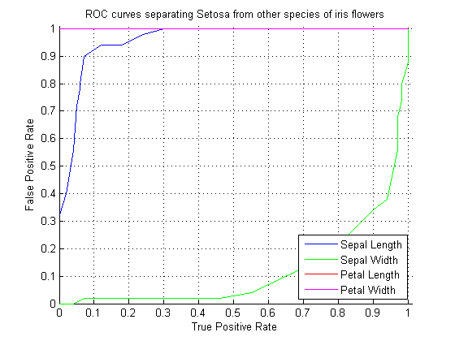

Tutorial for colAUC Function and Package
By Jarek Tuszynski
Function colAUC calculates Area under ROC curve (AUC) for a vector or for each column of a matrix.
The main properties of this code: * Ability to work with multi-dimensional data. * Ability to work with multi-class datasets. * Speed - this code was written to calculate AUC's for large number of features, fast. * Two different algorithms are provided one based on integrating ROC curves and one based on Wilcoxon Rank Sum Test aka. Mann-Whitney U Test. * Function can be used to plot ROC curves.
See http://en.wikipedia.org/wiki/Receiver_operating_characteristic
Contents
- Change History
- Licence
- Read in test file
- Convert it into 2-class label
- Calculate 2-class AUC using by integration of ROC
- Calculate 2-class AUC using "Wilcoxon rank sum test"
- Use abs=false arguments to get AUC in 0-1 range
- Calculate 2-class Gini coefficient
- Plot ROC curves for all the features
- Calculate 3-class AUC using by integration of ROC
- Calculate 3-class AUC using "Wilcoxon rank sum test"
- Plot 3-class ROC curves for feature #1
- Plot 3-class ROC curves for the best feature, using numeric labels
- Test on a dataset with 100 samples and 100,000 features
- Show avrRank function
Change History
- 2005 - original code written in MATLAB and R. Only R version released at http://cran.r-project.org/web/packages/caTools
- 2011-02-15 - Release of MATLAB version
- 2012-11-26 - added abs=false option per request
Licence
The package is distributed under BSD License
format compact; % viewing preference clear variables; type('license.txt')
Copyright (c) 2011, Jaroslaw Tuszynski
All rights reserved.
Redistribution and use in source and binary forms, with or without
modification, are permitted provided that the following conditions are
met:
* Redistributions of source code must retain the above copyright
notice, this list of conditions and the following disclaimer.
* Redistributions in binary form must reproduce the above copyright
notice, this list of conditions and the following disclaimer in
the documentation and/or other materials provided with the distribution
THIS SOFTWARE IS PROVIDED BY THE COPYRIGHT HOLDERS AND CONTRIBUTORS "AS IS"
AND ANY EXPRESS OR IMPLIED WARRANTIES, INCLUDING, BUT NOT LIMITED TO, THE
IMPLIED WARRANTIES OF MERCHANTABILITY AND FITNESS FOR A PARTICULAR PURPOSE
ARE DISCLAIMED. IN NO EVENT SHALL THE COPYRIGHT OWNER OR CONTRIBUTORS BE
LIABLE FOR ANY DIRECT, INDIRECT, INCIDENTAL, SPECIAL, EXEMPLARY, OR
CONSEQUENTIAL DAMAGES (INCLUDING, BUT NOT LIMITED TO, PROCUREMENT OF
SUBSTITUTE GOODS OR SERVICES; LOSS OF USE, DATA, OR PROFITS; OR BUSINESS
INTERRUPTION) HOWEVER CAUSED AND ON ANY THEORY OF LIABILITY, WHETHER IN
CONTRACT, STRICT LIABILITY, OR TORT (INCLUDING NEGLIGENCE OR OTHERWISE)
ARISING IN ANY WAY OUT OF THE USE OF THIS SOFTWARE, EVEN IF ADVISED OF THE
POSSIBILITY OF SUCH DAMAGE.
Read in test file
Iris flower data set collected by Edgar Anderson to quantify the geographic variation of Iris flowers in the Gaspé Peninsula. http://en.wikipedia.org/wiki/Iris_flower_data_set
[~, ~, iris] = xlsread('iris.csv');
X = cell2mat(iris(2:end, 1:end-1));
y = iris(2:end, end);
colLabel = iris(1, 1:end-1);
Convert it into 2-class label
msk = strcmp(y,y{1});
y2 = y;
y2( msk) = y(1);
y2(~msk) = {['not ' y{1}]};
Calculate 2-class AUC using by integration of ROC
auc=colAUC(X,y2,'ROC');
out = [colLabel; num2cell(auc)];
disp(out);
'Sepal Length' 'Sepal Width' 'Petal Length' 'Petal Width'
[ 0.9586] [ 0.8796] [ 1] [ 1]
Calculate 2-class AUC using "Wilcoxon rank sum test"
auc=colAUC(X,y2,'Wilcoxon');
out = [colLabel; num2cell(auc)];
disp(out);
'Sepal Length' 'Sepal Width' 'Petal Length' 'Petal Width'
[ 0.9586] [ 0.8796] [ 1] [ 1]
Use abs=false arguments to get AUC in 0-1 range
auc=colAUC(X,y2, 'algorithm', 'Wilcoxon', 'plot', false, 'abs', false); out = [colLabel; num2cell(auc)]; disp(out);
'Sepal Length' 'Sepal Width' 'Petal Length' 'Petal Width'
[ 0.9586] [ 0.1204] [ 1] [ 1]
Calculate 2-class Gini coefficient
see http://en.wikipedia.org/wiki/Gini_index
auc=colAUC(X,y2); out = [colLabel; num2cell(2*auc-1)]; disp(out);
'Sepal Length' 'Sepal Width' 'Petal Length' 'Petal Width'
[ 0.9172] [ 0.7592] [ 1] [ 1]
Plot ROC curves for all the features
colAUC(X,y2,'abs',false) legend(colLabel, 'Location', 'SouthEast'); title('ROC curves separating Setosa from other species of iris flowers') xlabel('True Positive Rate'); ylabel('False Positive Rate');
ans =
0.9586 0.1204 1.0000 1.0000
 Calculate 3-class AUC using by integration of ROC
[auc, lab]=colAUC(X,y); rowLabel = textscan(sprintf('%s vs. %s|', lab{:,1}, lab{:,2}), '%s', 'Delimiter', '|'); out = cellfun(@num2str,num2cell(auc),'UniformOutput', false); out = [[{''}; rowLabel{1}], [colLabel; out]]; format long; disp(out); format short;
Columns 1 through 3
'' 'Sepal Length' 'Sepal Width'
'setosa vs. setosa' '0.9326' '0.9248'
'versicolor vs. versicolor' '0.9846' '0.8344'
'virginica vs. virginica' '0.7896' '0.6636'
Columns 4 through 5
'Petal Length' 'Petal Width'
'1' '1'
'1' '1'
'0.9822' '0.9804'
Calculate 3-class AUC using "Wilcoxon rank sum test"
auc=colAUC(X,y,'Wilcoxon'); out = cellfun(@num2str,num2cell(auc),'UniformOutput', false); out = [[{''}; rowLabel{1}], [colLabel; out]]; format long; disp(out); format short;
Columns 1 through 3
'' 'Sepal Length' 'Sepal Width'
'setosa vs. setosa' '0.9326' '0.9248'
'versicolor vs. versicolor' '0.9846' '0.8344'
'virginica vs. virginica' '0.7896' '0.6636'
Columns 4 through 5
'Petal Length' 'Petal Width'
'1' '1'
'1' '1'
'0.9822' '0.9804'
Plot 3-class ROC curves for feature #1
colAUC(X(:,1),y) title('ROC curves separating species of iris flowers using sepal length') xlabel('True Positive Rate'); ylabel('False Positive Rate');
ans =
0.9326
0.9846
0.7896
Plot 3-class ROC curves for the best feature, using numeric labels
[~, ~, numericLabels] = unique(y); [~, bestFeature] = max(mean(auc,1)); colAUC(X(:,bestFeature),numericLabels)
ans =
1.0000
1.0000
0.9822
Test on a dataset with 100 samples and 100,000 features
and show the distribution of resulting AUCs. This is to show the danger of using functions like colAUC to identify best features. In some cases that can lead to missleading results especially when working with datasets with much larger number of features than samples.
n = 100; X = rand(n,100000); % randomly distributed samples y = ((1:n)>n/2); % half of the samples split into 2 categories tic; auc1=colAUC(X,y,'ROC','abs',false); toc; hist(auc1,50); xlabel('AUC per feature') axis tight title({'Distribution of AUCs per feature','(Although most are random (~0.5) some features can be very good)'})
Elapsed time is 6.821991 seconds.
Same calculation using Wilcoxon algorithm and make sure results are the same
tic; auc2=colAUC(X,y,'Wilcoxon','abs',false); toc; disp(max(auc1-auc2));
Elapsed time is 5.981806 seconds. 1.1102e-16
Look at 2 best features With enough features one can usually find a set which can be used to separate 2 classes, even when all the numbers are random.
auc = 0.5 + abs(0.5-auc1); [~, idx] = sort(auc, 'descend'); scatter(X(:,idx(1)), X(:,idx(2)),[],y,'filled');

Show avrRank function
x = round(rand(1,10)*5); r = avrRank(x); disp([x;r])
Columns 1 through 7
1.0000 1.0000 2.0000 1.0000 3.0000 3.0000 2.0000
3.0000 3.0000 5.5000 3.0000 7.5000 7.5000 5.5000
Columns 8 through 10
4.0000 4.0000 0
9.5000 9.5000 1.0000